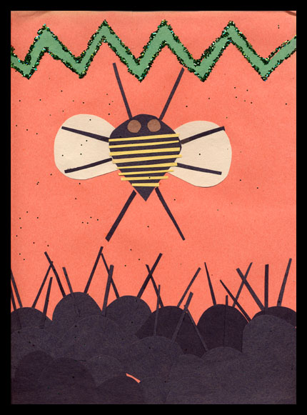

|  |
| This particular day a radical bee named Fred decided to arrange a meeting of the worker bees before the collecting began. He was tired of the extremely long hours and meager portions of honey distributed in return. At this secret meeting Fred outlined his plans to overthrow the queen. His plan was to surround Barbella's throne and then drown her in honey. "Only then," Fred said, "will we be free from the tyranny of this evil ruler!" The bees heartily agreed. Fred's plan is called a coup. |
| next |